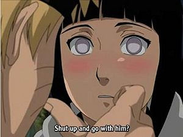
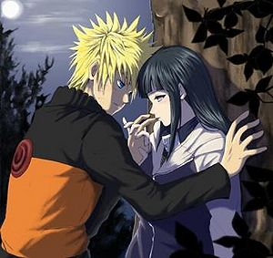
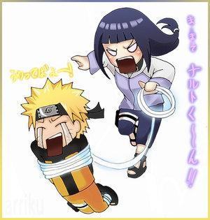
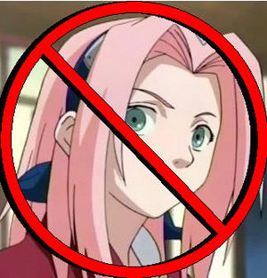

Naruhina
 De: La Frikipedia, la enciclopedia extremadamente seria.
De: La Frikipedia, la enciclopedia extremadamente seria.
 Hinata a punto de tener un orgasmo por ver a
Naruto.
« Naruto se quedará con Hinata porque es mucho más linda que Sakura quieran o no»
~ Yo hablando del tema de Naruhina.
« Naruto jamás se quedará con Hinata porque el tiene ojos solo para Sakura»
~ Pendejo|Un pendejo criticando al naruhina
« Se quedara con Hinata porque tiene unas tremendas cualidades y porque se lo merece.»
~ Otaku hablando del Naruhina.
« Si Naruto no se queda con Hinata me voy a suicidar»
~ Friki|Fan histerico hablando del Naruhina.
«Jajaja!! Que estupidez!! Naruto jamás podría quedarse con esa tonta... ¡¡Sakura es la mejor!!»
~ Narusaku|Pro-NaruSaku defendiendo a su querida putilla plana pelirrosa
«Si se queda con la la putilla pelirrosa pondré un altar para Hinata Hyuuga y mandaré a la goma todo mi porno y los dvd's de Dr. House.»
~ Pervertido|un pro-NaruHina jurando sobre su porno y Gregory House
«¡Ya basta de peleas naruhina y narusaku! ¡Si quieren ver romance vayanse a ver un shojo!»
~ Masashi Kishimoto|Masashi me subo en tu moto hasta los huevos de las peleas narusaku y naruhina
NaruHina: (pero mejor escrito como naruhina, o naruhuana por los antis) Fenómeno, corriente, disciplina, movimiento opositorio, partido político, ley universal, fe, religión, droga psicotrópica, mentira, falsa, estafa (bueno es llamado de muchas maneras.) Corriente underground creada por los frikis fans de Naruto (Hinata pricipalmente), cuya función es apoyar a la relación sentimental y sexual entre Hinata Hyuuga y Naruto Uzumaki.
Orígenes
(En el Anime)
Todo se remonta al primer capitulo de la primera serie de Naruto en donde se le ve a Hinata con ojos de borrego a medio morir y babeando por el Naruto al momento en que el se transforma en chica para darle placer sexual a Iruka. Desde ese momento miles de cibernautas en Internet agitaron sus banderas y dieron gritos en el cielo de apoyo a esta relación.
Sin embargo la cosa se vio fea en el tercer episodio en donde se le ve a Naruto cachondearse por la putilla rosada y Hinata como el chinito nomás milando¨. Los simpatizantes del Naruhina se hicieron saber , formando manifestaciones , huelgas de hambre , atentados terroristas , amotinaciones , trinchamientos , guerra para llamar la atención de Masashi Kishimoto para darle saber su preferencia por el Naruhina.
Sin embargo los simpatizantes del Narusaku no se quedaron atrás y declararon una guerra cybernáutica contra los naruhina mientras estos hicieron lo mismo con los simpatizantes del Narusaku así como a su diosa la putilla rosada
El objetivo
El objetivo principal del Naruhina (aparte de que únicamente Hinata sea feliz por siempre, sin importar Naruto) es crear a un ninja perfecto, el ninja más poderoso jamás creado. Un niño superdotado creado a partir de los genes de cada uno. Un niño o niña con byakugan potenzializado con el chakra del kyubi. En pocas palabras un monstruo. El ninja definitivo.
Mandamientos NaruHina
- 1. Siempre amarás al NaruHina por encima de todas las demás parejas tanto de Naruto como de otros animes.
- 2. Considerarás hereje a cualquier otra pareja que tenga que ver con Naruto o Hinata (NaruSaku, KibaHina...)
- 3. Defenderás al NaruHina en cualquier parte, diciendo que es la pareja perfecta del anime (lo cual es verdad)
- 4. Te apuntarás a cualquier web o fanclub de NaruHina que veas.
- 5. No mancharás la imagen de la pareja en ningún sitio (y a ser posible, no faltarle el respeto a ninguno de los dos)
- 6. Verás una y otra vez los momentos NaruHina tanto del anime como del manga.
- 7. Deberás poseer abundante material de NaruHina, ya sean fanarts, vídeos... lo que sea.
- 8. Deberás alabar el NaruHina siempre que puedas (y rezar todos los dias la oración En el nombre de Yondaime, de Naruto y del espíritu de Kishimoto, Ramén para que el NaruHina sea posible en un futuro no muy lejano)
- 9. No matarás a tus rivales (Anti-NaruHina, Pro-NaruSaku...) es mejor llevarse bien con ellos y no derramar sangre por el suelo.
- 10. Recuerda que las parejas opuestas (es decir, que el chico sea divertido, gracioso, rubio y con ojos azules, y la chica tímida, ojos claros, con el pelo negro y de piel blanca) siempre triunfarán en la vida y está demostrado 100% en la vida real. Los polos opuestos se atraen.
Características de un tipo NH
- Creen que Naruto y Hinata se enamoraran y serán felices por siempre.
- Odian a Sakura sobre todas las cosas por engatusar a Naruto
- Odiarían a Masashi Kishimoto si Naruto se queda con Sakura.
- Dibujan doujins y fanarts que demuestren tu apoyo al Naruhina.
- Hacen AMVs que demuestren tu apoya a esta pareja.
- Hacen doujins hentais donde se muestre a Naruto y Hinata en acto carnal.
- Ponen en los foros de anime el mismo tema del naruhina una y otra y otra vez.
- Discuten con los fans del narusaku en todos los foros y amenazarlos de muerte por apoyar esa blasfemia.
- Van con su novia o novio a las convenciones disfrazados de ellos dos y mostrar su cariño mutuo como si fueran ellos los que lo hicieran.
- Afirman que Hinata es la chica más bonita de la serie un millón de veces.
- Ven todos los capítulos de la serie a ver si pasa algo en su relación
- Se imaginan a los hijos de Hinata y Naruto como los ninjas mas poderosos que hayan existido.
- Dicen Naruhina 4-ever en todos los comentarios de todos los videos del naruhina en youtube
Tipos de NH:
Los NH hormonales: solamente les gusta la pareja porque es linda y ya. Y aunque no les guste el NaruSaku, ya estan asumiendo que por ahí va la cuestión.
Los NH rezadores: Que creen y practicamente le rezan a Kishimoto todos los dias para que haya un milagrito para que el rubiales se fije en Hinata como por arte de magia.
Los NH loros: tiran algo de argumentos razonables, pero si lees los distintos foros vas a ver que fue alguien que se le ocurrio la brillante idea y el resto le sigue sin siquiera pensar si esta de acuerdo; un argumento mas es un argumento, sin importar lo bueno que sea. Leyendose el manifiesto NH y ver periodicamente NF sabes de donde salio la idea original.
Los NH antis: Los que el 90% de sus argumentos son anti-NS y el resto son algo de SS y NH. Dicen que el NS existe porque Sasuke y Hinata no estan, pero no pueden argumentar equilibradamente pro-NH/anti-NS, sobre todo si hablamos de la segunda parte, donde el SS y NH con suerte tienen cruce de palabras.
Los NH "bipairing": son aquellos que son tanto fans del NH como del SS. Digo que son contradictorias porque dicen que Sakura golpea a Naruto y que por ello no pueden estar juntos, pero si que la pelirrosa puede estar con un renegado que la ha golpeado dos veces(solo una vez bakas) y que ha tratado de matarla (trato de matar a Naruto). Otro ejemplo es que Hinata se merece a Naruto, pero cuando analizamos si Sasuke se merece a Sakura mas que Naruto como que no les gusta tanto la cosa. Y mi favorita, la del segundo plato: Naruto no puede ser segundo plato de Sakura, pero Hinata si puede ser segundo plato del rubiales porque el se dara cuenta de que ella siempre le dio su apoyo mental; sin embargo, la pelirrosa no puede dar cuenta que Naruto siempre le ha dado su apoyo materialmente... que contradicciones, ¿no?
Los NH "relleno": Los que creen que en el relleno y en el databook esta toda la trama y que el anime y el manga son un mero complemento que no sirve para nada.
Los NH retro: Los que todavia se quedan pegados en el capitulo 98 y en la promesa de sangre, sin importarles que en casi 300 capitulos Naruto le ha dicho dos frases cortas a Hinata, pero no importa, igualmente Naruto se quedara con ella.
Los NH sociales: Estos empiezan a ser irracionales, solamente porque son mayoria, Kishimoto les hara lo que ellos digan, ya que Kishi lo que mas le ha importado en estos 400 capitulos es reflejar el amor NH.
Los NH alucinogenos: Tambien tienen el "complejo de Kishimoto" o simplemente creen que ven la mente de Naruto, inventandose que Naruto y Hinata lucharan contra Pein (en lo cual acertaron O_o) y de ahi el amor surgira (esa no tanto ¬¬). O que ella con su junken luchara con Madara o, la peor, que con su byakugan podra detener a NK4T.
Los NH Kishimoto: Son los típicos que dicen "cuando Hinatita-chan se declare Masashi me subo en tu moto no podrá hacer que Naruto se resista a una chica taaaan linda y tierna". Dicen pura mierda que no concuerda en nada.
Los NH declarativos: Los que piensan que con una declaracion, Naruto se olvidara de Sakura y se ira corriendo detras de Hinata.
Los NH insistentes: Los clasicos fans de Hinata, que te ponen una imagen de Hinata desnuda frente a tu cara, por lo menosson tan tontos que no saben hackear sino tu computador estaría lleno de naruhina y relleno.
Los NH bashers: m*****, m*******, m******* y mas m****** para Sakura para decir que Naruto se quedara con Hinata.
Los NH superficiales: dicen que es NH por un par de t*tas. Solamente puede enamorarse por la belleza fisica de una persona, cuando Kishi ha marcado tanto los sentimientos.
Los NH Hinatidolatras: Hinata es la diosa de los cinco paises ninjas y ella es la mejor, sin importar que haya peleado solamente dos veces en todo el manga y, en la primera, haya perdido y, en la segunda, haya quedado casi en el limbo.
Los NH fanatico-religioso: Los peores, adaptan rezos (faltandole el respeto a los credos) y pueden incluso matar por sus ideas.
Enemigos del Naruhina
- Narusaku (su peor enemigo)(Estatus: muerto xD)
- Sasuhina (Estatus: alguna vez vivió???)
- Kibahina (Estatus: Hola???)
- Nejihina (Estatus: Incesto??? What The hell!!??)
- cualquier relación que involucre a Naruto y a Hinata
Aliados
- Y cualquier otra relación que NO involucre a Naruto y Hinata(y como extra que aleje a sasuke y sakura de este par xD)
Momentos del Naruhina
 La imagen más usada por los que apoyan el naruhina.
 Naruto y Hinata una bella relación
 Forma en que los del naru hina ven a sakura
Momentos en a serie que hacen aprobar al Naruhina:
En el animé:
- Primer episodio de la serie: primera aparición de Hinata en la serie de anime donde se le ve poniéndose cachonda a punto de un orgasmo con solo ver a Naruto
- Presentación de Hinata en la serie: el capitulo en que se presenta a los nueve novatos, Naruto y Hinata cruzan la mirada y ya (para los naruhina ese es un punto muy importante de su relación)
- Primer examen de chunnin: Naruto y Hinata les toca hacer juntos el examen teórico sentados pegaditos (se cree que Hinata soborno a Ibiki con una casa en la playa para que los juntaran así)
- Momentos antes del segundo examen: Hinata le quiere regalar medicina hecha por ella misma a Naruto pero el muy tonto la no la quizo (claro porque el tiene a la putilla medica)
- Pelea entre Naruto y Kiba: aunque aquí ni se llegan a hablar, se ve que su relación va en buen progreso, sobre todo al ver que Hinata se sonroja al ver que Naruto se hecha un pedo en la cara de Kiba.
- Pelea entre Hinata y Neji: Neji le da una paliza a Hinata pero ella no se rinde a ver el apoyo que le da Naruto (cuando el insiste que termine ella porque se quiere ir a su casa)
- Momentos antes de la pelea entre Naruto y Neji: Naruto y Hinata platican un rato a solas sobre lo que le gusta a los dos de cada uno. Al escuchar a Naruto a Hinata le da un algo que la deja tiesa
- Pelea entre Naruto y Neji: aquí Hinata asiste ala pelea con Kiba en el estadio azteca mientras Naruto se venga por las madrizas que le metió Neji a Hinata. Aquí Hinata lo único que hace por Naruto es desmayarse por comer tanto algodón de azúcar.
- Corto deportivo: Hinata trata de declararse a el mientras el se esta miando afuera del baño de mujeres
- La famosa escena de la cascada: escena mas usada por los fans de Naruhina en sus AMVs aquí vemos durante esos mismos capítulos la escena en donde Naruto ve en la cascada al que se convertiría en uno de los cuerpos mas sexis que se hayan creado. Sin embargo Naruto ni por enterado que se trata de Hinata (ya quisiéramos muchos una oportunidad así)
- La pelea por bizcocho: en esos mismos capítulos en que Hinata pelea con unos insectofilos y a su abeja gigante mostrando una nueva técnica que pensó en tanta casa pensando en Naruto.
- Una comida con forma de Naruto: capítulos después al camino de hacer una misión Hinata le prepara comida a Naruto con su misma cara, Naruto lo único que le dice es que será una buena esposa (por la comida o porque ya se dio cuenta de que ella era la de la cascada)
- Los novatos contra Al Qaeda: el abuelito de Osama Bin Laden puso bombas por toda la villa y a los novatos se le encomendó encontrarlas antes de que exploten. Naruto haya una y le pide a Hinata que lo ayude pero el wey lo dijo de una forma que s entendió como ¿ quieres ayudarme? Hinata no le respondió por timidez y Naruto le dice en su cara que mejor se lo pide a Neji (que pendejo quedo como gay)
- Rellenuto rellenuto y más rellenuto: ¿creen que me acuerdo de todo? Vean los putos enlaces.
- Final: Hinata ve como Naruto y Jiraiya se van de reventón un rato, Hinata le promete mejorar (y si que mejoro)
- Shippuden: la más reciente Naruto y Hinata se reencuentran después de estos años. Hinata se desmaya por ver a Naruto. Pero el muy pendejo ni noto que se puso rebuenota. En lo oscurito de un árbol Naruto le pide venir con el. La caliente de Hinata piensa que se refiere a otra cosa ya saben a lo que me refiero y se vuelve a desmayar.
- Shippuden: el ataque de Batas nubladas S.A. de C.V: Lo que le faltaba a los enemigos de este creo. despues de discutir sobre quien
era el preferido de jyraiya en la cama tenia la razon respecto a la paz naruto es clavado contra el suelo por Pein entonces este decide violarlo llevarselo para violarlo de nuevo obtener el poder del kiuuby, no sin antes haberse llevado a la tumba a todo aquel que le enseño algo de valor a naruto:jyraiya, el kaka, y el sapo fukusaku, iruka no cuenta por que en la escuela no se aprende nada de valor; en ese momento aparece hinta para defenderlo, naruto la trata de botar puesto que es muy peligroso y Pein es muy fuerte, sin embargo ella decide quedarse por eso chicos no abusen de la masturbacion y las drogas para protegerlo, en ese momento le cuenta todo lo que naruto ha hecho por ella, sin siquiera el darse cuenta; el esta sorprendido, Pein por su parte esta pensativo puesto que a pesar de ser hombre???? no se siente atraido hacia hinata; es entonces cuando le confiesa su amor y arremete contra pein, en esos segundos naruto se da cuenta de muchas cosas acerca de su vida diaria, la sensacion de ser observado, incluso mientras se bañaba, por que por la noche sus cosas cambiaban de lugar, las incontables camaras dentro de su casa, por que se sonrojaba/desmayaba cada ves que el la veia ahi se dio cuenta que no era un desmayo cualquiera si no que sentia un orgasmo, y en como pudo no darse cuenta que le gustaba a una mujer de verdad durante 6 años es que es gilipillas, lamentablemente el "enfrentamiento" entre Pein y Hinata fue censurado en el manga, a continuacion lo que en verdad paso: hinata fue contra pein, le trato de dar unos golpes pero no pudo, pein aprovecho un descuido y le agarro las tetas ( el primero y unico en el sipueden ) al ver que no pasaba nada ni sentia nada a pesar de tocar lo que hace de hinata el sexsimbol de la serie, se molesto y en cuanto ella quiso liberarse con su juho soshiken por que queria que el primero y unico que la tocara y le hiciera todo lo demas en el sipueden (maldito neji) fuera naruto , aprovecho que la tenia bien sujeta y la estrello contra el suelo, la saco y decidio metersela...la lanza desde luego, naruto le digo que no lo hiciera que era su unica oportunidad con una chica de verdad por mas acosadora o criminal que fuera, pero a el no le importo y la ataveso diciendole que a el nunca le paso eso puesto que nunca tuvo novia ahora sabe por que para verla morir frente a sus ojos, pero que debe ser parecido a ver morir a los padres, y para enpeorar las cosas le restrego en la cara que sasuke nunca lo amaria asi que hinata era su ultimo chance de estar con una persona sin pagarle, lo cual lo molesto por que no tuvo la oportunidad de satisfacer sus necesidades sin usar un kagebunshin lo suficiente como para sacar al zorro con seis colas.
Entre alguna cosa que haya salido en el manga
20 cosas que hay que aprender del NaruHina
- No importa que el protagonista casi se haya matado por Sakura, que le pida citas, que la quiera ver desnuda y que el propio Kishi escriba que todavia le gusta ella. Naruto de todas maneras se quedara con Hinata porque la secundaria manda y ella se merece su "trofeo", sobre todo despues de lo bien que lo defendio de Kabuto.
- Naruto posee retraso mental. Pero algun dia le llegara luz al cerebro, descubriendo poderes telepaticos y vera que Hinata era su verdadera musa inspiradora en las peleas, puesto que siempre le "apoyo".
- Hinata piensa en Naruto es momento NaruHina porque asi le da fuerzas al supuesto protagonista. Y si se desmaya, es mejor, le da verdadero drama a la serie.
- Sakura no ha dado un beso, pero es la p*ta mas grande de los cinco paises ninja. Naruto tiene que quedarse con Hinata, que es pura y casta (cosa que pongo en duda, ya que sólo una puta se encuera para entrenar, aunque haya sido en relleno, pero el bashing a Sakura es infalible.)
- Naruto esta obsesionado con Sakura porque es bonita, ese sentimiento es parte de un amor infantil y superficial. Hinata es el verdadero amor de su vida, ya que aun con los 300 capitulos en que apenas se hablan, tienen una conexion telepatica impresionante.
- Si Sakura golpea a Naruto es un insulto imperdonable, aun a sabiendas que es un humor comun en la cultura japonesa. Que Hinata se quedara mirando mientras Naruto sufre por su soledad y que ni siquiera haya hablado con el de los problemas que tuvo en la segunda parte es para ponerla en un altar y prenderle velitas.
- La parte mas importante del manga es el examen chuunin. Los 300 capitulos que vienen a continuacion son un lapso para que Naruto se recupere de su retraso mental. Desgraciadamente sigue igual o peor, porque en vez de verle las enormes boobies de Hinata, se limita a mirar tablas de planchar.
- Todo es valido para el NaruHina, incluso corazones en forma de vagina en el capitulo 98, los filler y los drama en que hay cita (y que mas encima resulto todo un fracaso porque Naruto la miraba embobadisimo). La opinion de Kishimoto del capitulo 395 y el drama sea AU es poco y nada relevante.
- No importa que Sakura la hayan rechazado regiamente y con golpe incluido ni que tampoco la haya intentado matar, ella siempre amara entregadamente a Sasuke(si lo está!, lo han dicho en el manga 470). Pero la promesa de por vida da por hecho que Naruto no puede querer mas a Sakura porque se debe enamorar de Hinata.
- La escena en donde se dice "me gustan las personas como tu" es una escena en que Naruto se le insinua a Hinata que es el potencial amor de su vida, que se casaran y tendran muchos hijitos con el byakugan.
- Tienen mucho en comun, sobre todo en lo fracasado. Pero su hijos saldran superdotados con hiper-mega-poderes porque se mezcla el byakugan y el kyubi.
- El databook es mas importante que el manga. No importa si es contradictorio o que se reafirme hasta en su miniversion de la primera saga de shippuden que todavia quiere a Sakura. Solo es tomado en cuenta la parte en que dice que el NH es posible, los sentimientos de Naruto se desharan como por arte de magia.
- Naruto va a ser rechazado nuevamente cuando Sasuke regrese. No importa si Sakura ha cambiado o ha cambiado su forma de ver a Naruto, cuando vea el Uchiha volvera a ser la fangirl porque Naruto tiene que curarse el despecho telenovelescamente con su "amiga-del-alma-que-siempre-le-ha-apoyado-mentalmente" Hinata.
- La frase del examen chuunin "siempre te ha observado" es un equivalente a un "te ama con locura y apoyamos la pareja". Lee y Sakura lo afirman y hasta seran los padrinos de la boda.
- SS Y NH se formaron desde el principio (esto solo aplica en la primera y en SasuNaru) porque Sakura y Hinata estan locamente enamoradas. Los sentimientos del protagonista no sirven y no interesan, tiene que quedarse con la destinada para el, aun cuando casi no le habla y aparezca en apenas 450 viñetas del manga. Y lo poco que aparece es unicamente para demostrar que sera la esposa ideal de Naruto.
- Se dice que no hay NaruSaku en la primera parte. Pero aunque no haya NH en la segunda, se hara realidad de todas maneras porque Hinata se declarara.
- Que Sakura se sonroje, llore por Naruto y le mire de otra manera EN EL MANGA es imposible que sea amor. Pero si Naruto acepta una cita con Hinata en un cd drama u OVA, es que se predice que eso sera amor de verdad. Esto es muy cierto.
- Todo es especulacion. El 3/4 del manga de vacio de interaccion da lo mismo, el manga no termina, puesto que Naruto algun dia se olvidara de Sakura y se fijara de Hinata.
- Yamato y Sai son otros retrasados mentales, ya que apenas conocen a Naruto y Sakura y los estan ligando; no puedes hacerlo con personas que recien vas conociendo, eso no es algo producto de una buena observacion. Pero es una nimiedad que supuestamente Hinata lleve observando años a Naruto y se le haya olvidado el pequeño detalle que a este le gusta Sakura.
- El NaruSaku solo se desarrollara en caso que no estuviesen Sasuke y Hinata, por eso se tiene la creencia cierta y precisa que Sasuke debe redirmirse y vivir para contarlo, porque tiene que volver a revivir su clan con Sakura, sin importar que no haya desarrollado en el manga sentimientos romanticos hacia ella(pero desarrollo sentimiento). Todo sacrificio tiene que ser valido para que el NH se de algun dia. Pero no hay que olvidarse que ellos no serian un derivado del SS, eso ni pensarlo.
Véase también
¿Sabías que ...
- ... El 99% de las Naruhinas lo son porque odian a Sakura?
- ... Kishimoto no apoya el naruhina ni el Sasusaku?
- ... pero dijo que le gustaba el Sasunaru?
- ... Hinata está peor y sólo sabe decir :"Naruto kun" y "Byakugan", juntar los dedos y desmayarse?
- ... mientras tu lees este artículo hay una guerra cybernautica de quien edita mejor este artículo de la frikipedia?
- ...lo he modificado otra vez
- ... que si Naruto se queda con Sakura el 97 % de los narutard mandaran a la serie al carajo?
- ... Si no terminan juntos me pego un tiro? (y a quién le importa que la que escrbió esto se mate?)
- ... El 50% de los Anti-NaruSasu odian el Yaoi hasta la muerte?
- ... El NaruSasu es la peor cagada que han echo, pero es la segunda más real (después del SasuSaku)
- ... El SasuMeli es más real que todas?
- ... SasuSaku está en primer lugar a Nivel MUNDIAL y NaruHina no??
- ...lo he vuelto a modificar.
- ...IP anónima lo ha modificado porque los otros que editaron este artículo están algo ciegos?
Enlaces externos
Autor(es):
- Krusher
- Frikiman
- Roms
- Khazike Khashondo
- El Sevillano
- Naruto hyuga
- GonzaloQ
- Galdex
- Friki misfit
- El Samo 2
Frikipedia 2005-2016, Licencia
GFDL 1.2 - Extraído por FrikiLeaks